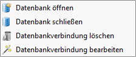

Das Datenbankmanagement kann auf der Datenbankebene über das Rechtsklickmenü aufgerufen werden. Um eine Datenankverbindung wieder zu bearbeiten, kann das Rechtsklickmenü auf der Datenbankebene aufgerufen werden.  Über dieses Menü kann die Datenbankverbindung verändert oder gelöscht werden. Dabei wird nur die Verbindung zu QGIS betrachtet, die Datenbank und die Datenbankverbindung zu GeODin bleiben unangetastet.